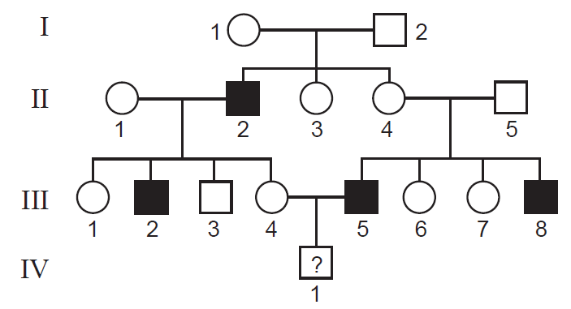
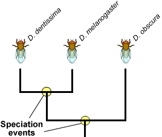
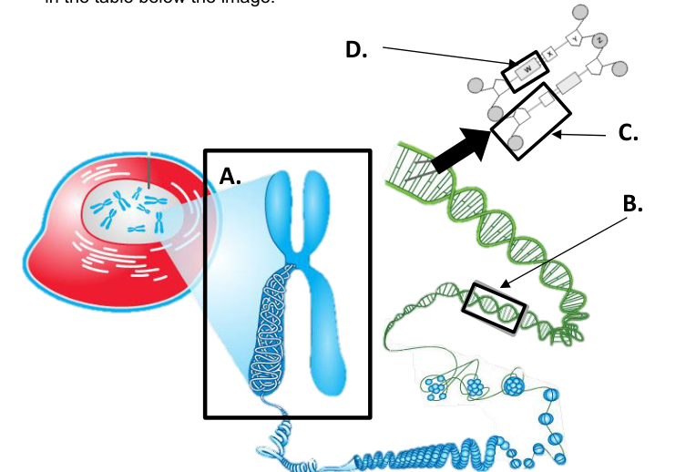
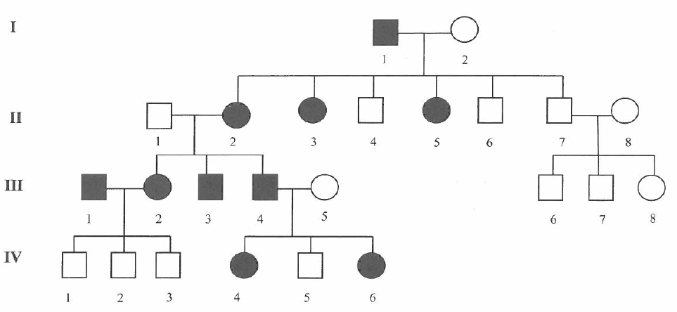
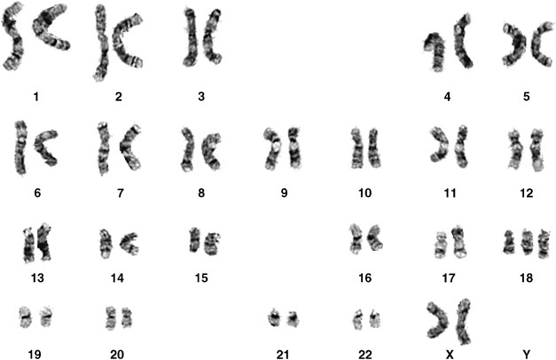
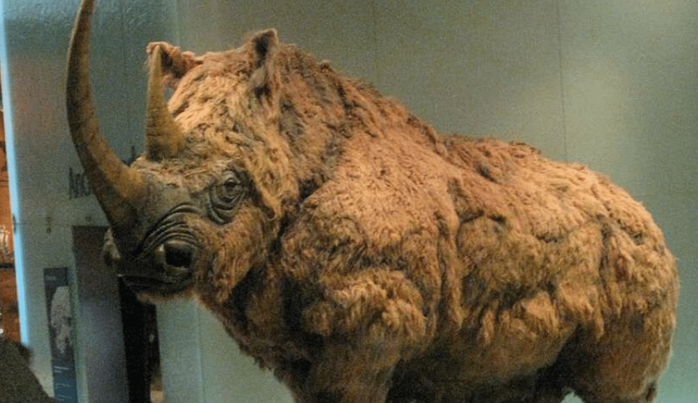
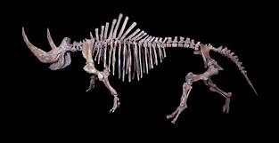
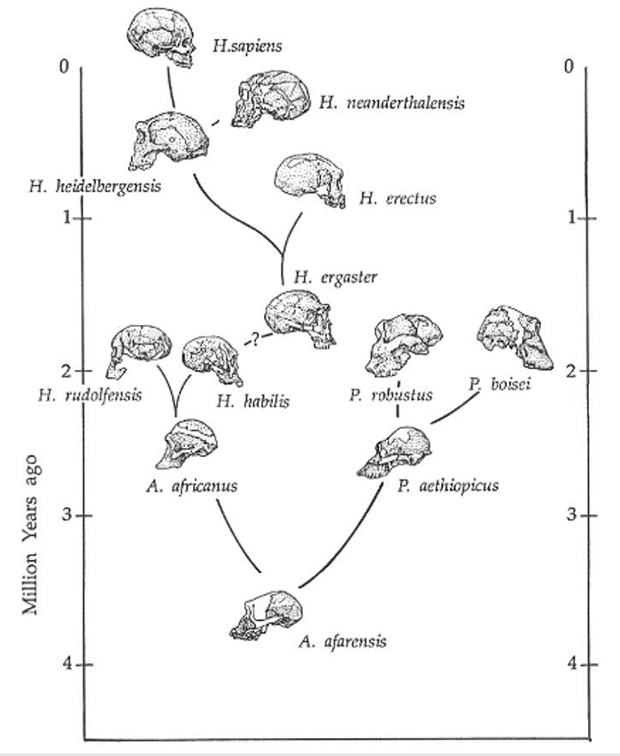

Section A: Multiple choice
In terms of size, which genetic material is larger?
A man and woman, both unaffected, have a child with phenylketonuria, an autosomal recessive trait. The chance that their second child will have the trait is:
Both parents must be carriers (Pp × Pp), so each child has a 1 in 4 chance of being pp.
Which information (from the list below) is needed to make a karyotype?
I. Size of the chromosomes
II. Gene mutations of the chromosomes
III. Age of the individual
Melanin is a protein pigment produced when your skin is exposed to ultraviolet (UV) radiation. UV radiation is a known mutagen. What is a mutagen?
Which of the following factors influence the development of a phenotype? Choose the best answer.
Which of the following statements is true when referring to autosomal chromosomes?
Pairs 1–22 are autosomes; pair 23 is the sex chromosomes. Sex cells contain autosomes too (one of each).
A gene in chickens has the alleles F, feathered legs, and f, featherless legs. Simpson, a featherless chicken, was mated with Brooke, a chicken with feathers. Brooke's mother was homozygous recessive for the trait.
All chicks from the cross will:
Simpson is ff. Brooke has feathers but her mother was ff, so Brooke is Ff. Ff × ff gives Ff and ff, so every chick gets an f from Simpson.

Red-green colour blindness is an X-linked recessive trait with the alleles XR = normal colour vision, Xr = red-green colour blind, Y = Y chromosome. Examine the pedigree above. With respect to this gene, it is reasonable to predict that individual:
III4 has normal vision but her father (II2) is colour blind and passed her his Xr, so she must be a carrier, XRXr.
In a species of flower, colour is controlled by a single gene showing incomplete dominance. When a pure-breeding red flower (RR) is crossed with a pure-breeding white flower (WW), all offspring (RW) have pink flowers. If two pink flowers (RW × RW) are crossed, what is the expected ratio of phenotypes in the offspring?

The diagram above shows the evolutionary relationship between three species of fruit fly. Which of the following statements about the diagram is false?
D. dentissima and D. melanogaster share the most recent common ancestor, so D. obscura is equally related to both of them.
Section B: Short answer
Question 1 (6 marks)
A section of one of the strands of a DNA molecule has the sequence of bases shown in the top row. Enter the sequence of bases on the complementary strand.
| DNA template strand | C | T | T | A | C | A | T | T | A |
|---|---|---|---|---|---|---|---|---|---|
| Complementary strand |
The percentage of the base thymine in a molecule of DNA is 30%. What is the percentage of guanine bases in the same DNA molecule?
T = 30%, so A is also 30% (60% in total). That leaves 40% for G + C, so G is half of that: 20%.

Identify the highlighted components in the diagram labelled A to D.
Label A:
Label B:
Label C:
Label D:
B is a section of DNA, so "gene" (or allele or DNA) is accepted.
Question 2 (6 marks)
The pedigree below shows the inheritance of a condition in a family.

The pedigree follows an X-linked dominant inheritance pattern. Referring to individuals in the pedigree, give evidence to explain why it must be a dominant trait.
IV1, IV2 and IV3 are unaffected but their parents, III1 and III2, are both affected, so the trait cannot be recessive.
Using the allele symbols XN and Xn, give the genotypes of the individuals below. (Type them as, for example, XNXn.)
Genotype of I1 =
Genotype of III2 =
I1 is an affected male, so he must be XNY. III2 is an affected female with unaffected sons, so she must carry Xn as well: XNXn.
Use a Punnett square to work out the chance that individuals I1 and I2 will pass the trait on to their daughters.
XNY × XnXn: every daughter gets her father's XN, so every daughter is XNXn and affected: 100%. (1 mark for the Punnett square or other working, 1 mark for the answer.)
Which other inheritance pattern could the pedigree above follow?
Question 3 (2 marks)
A man with Type A blood and a woman with Type B blood have a child who has Type O blood. Calculate the probability that their next child will have Type AB blood. Use a Punnett square.
The Type O child (ii) means both parents carry i: the man is IAi and the woman is IBi. The square gives IAIB, IAi, IBi and ii, so the chance of AB is 25%. (1 mark for working, 1 mark for the answer.)
Question 4 (4 marks)
Use the following karyotype to help you answer the questions.

On paper you would circle the abnormality and label it A. Which chromosome number shows the abnormality? Chromosome
There are three copies of chromosome 18 (trisomy 18) instead of a pair.
Circle the sex chromosomes and label them Z. The sex chromosomes in this karyotype are , so the person is .
Explain what homologous chromosomes are.
Homologous chromosomes are the pairs of chromosomes that have the same genes in the same order (1 mark), with one chromosome inherited from each parent (1 mark).
Question 5 (3 marks)
The diploid number of mosquitos is 6.
In which of the following mosquito cells would you expect to find only 3 chromosomes?
Explain how fertilisation maintains the diploid number of chromosomes in offspring. Discuss the chromosome number for gametes and zygote cells. (In humans.)
Sperm and egg cells contain only 23 chromosomes: they are haploid (1 mark).
Fertilisation is the fusion of a sperm and an egg cell, giving a diploid zygote with 46 chromosomes (1 mark).
Question 6 (5 marks)
The woolly rhino (Coelodonta antiquitatis) was a large mammal that lived across Eurasia during the Pleistocene epoch (Ice Age). Its body was covered in thick, shaggy fur, and it had two large horns, with the front one much longer.


A population of woolly rhinos became geographically isolated on a remote, newly formed island in the North Pacific. Over the last 50,000 years, the island's climate gradually became much warmer and drier (more like a savanna). Many fossils of the woolly rhino have been found on the island.
What can we conclude about the age of fossils found in rock layers above the woolly rhino fossils?
They are newer (younger, more recent): they were deposited after the layer containing the woolly rhino.
Using your understanding of natural selection, explain how the thick fur of the woolly rhino might have changed over the last 50,000 years as the climate changed.
- There was variation in the thickness of fur in the woolly rhino population (1 mark).
- The selection pressure was the gradual increase in temperature (1 mark).
- Woolly rhinos with shorter, thinner or less dense fur were more likely to survive and reproduce, because they would not overheat as easily (1 mark).
- Selection continued over many generations, until the alleles for thinner fur became more common in the population (1 mark).
Question 7 (4 marks)
Fossil evidence suggests that humans have a complex evolutionary history: rather than one species following another, several related species existed at the same time. The evolutionary tree below summarises our current understanding of human evolution.

How many species were there in the Homo genus (shown as H. ____) at 1 million years ago?
Name the common ancestor shared by H. sapiens and P. robustus:
Fossil skeletons of early human ancestors show many clear trends. For example, the volume of the brain case increases over time. Explain the survival advantage of larger brain cases.
A larger brain case allowed a larger brain (1 mark), so the species was more intelligent, with better problem solving (1 mark).
Answers about protecting the brain are not accepted.